Hyprland tinkerer · Linux desktop
Two projects.
One desktop.
Dotfiles that turn any Linux distribution into a themed Hyprland desktop — and a Qt/QML bar built on Quickshell that replaces the rest of the shell.
- Distributions
- 18 · six families
- Installer
- gum TUI · one script
- Theming
- pywal16 · wallpaper-led
- Desktop
- Hyprland · Qt 6
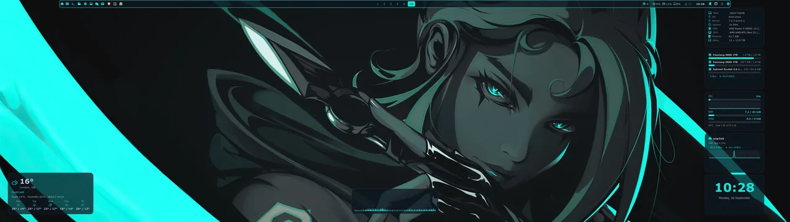
Project · dotfiles
The installer behind the desktop.
A single script detects your distribution and lays down a matching, hand-tuned Hyprland desktop — every colour generated from your wallpaper.
- pywal16 pipelineOne wallpaper drives every colour on the desktop.
- gum TUI installerAuto-detects the distro, installs 18 package groups, keeps prompts clean.
- XFCE fallbackA complete desktop safety-net alongside Hyprland.
- hyprtk-bar-qt bundledThe desktop suite installs and autostarts with the dots.
- NVIDIA & AMD readyDedicated configs, DRM and AMDGPU support.
- Session & lockswaylock blur, logout menu, SDDM and GRUB theming.
git clone https://github.com/hyprtk/dotfiles.git ~/hyprtk
cd ~/hyprtk
sh ./1-install.shThe installer is interactive and keeps an XFCE session available as a fallback.
The same desktop, six distributions
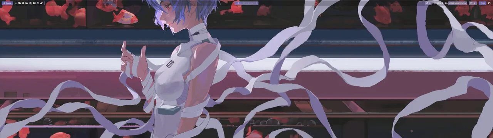
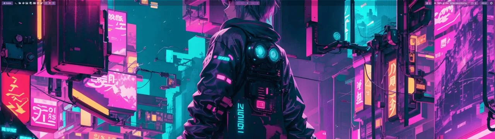
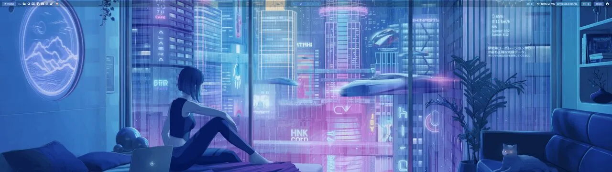
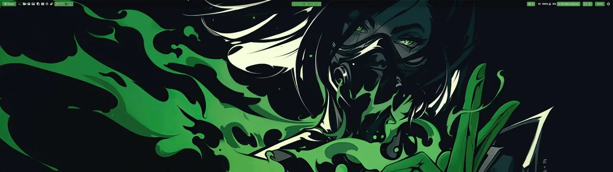
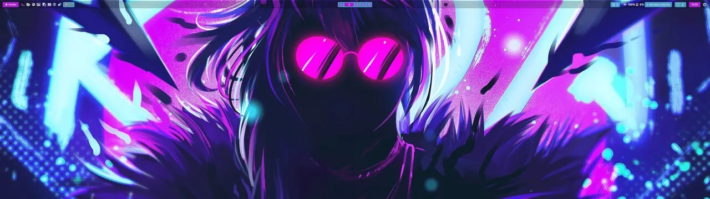
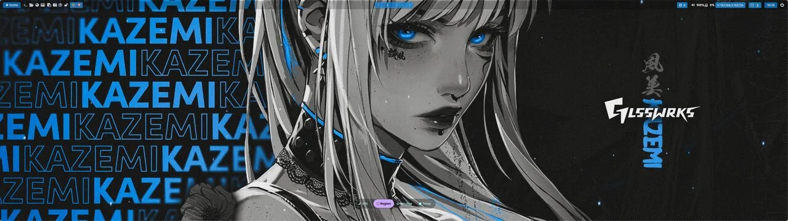
Project · hyprtk-bar-qt
The bar that is the whole desktop.
A standalone Qt/QML suite, built on Quickshell, that replaced a stack of separate tools: taskbar, launcher, notification daemon, control centre, system monitor and desktop widgets — themed live from pywal16.
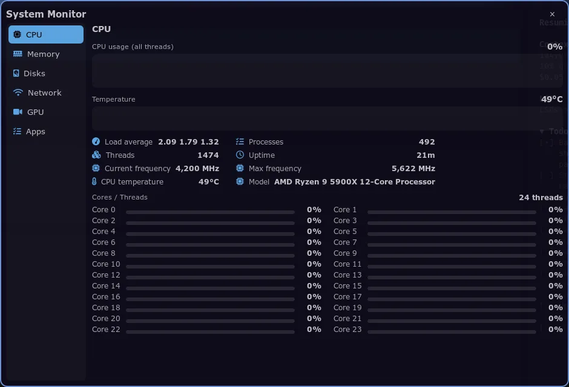
- Modular barArrange, show, hide and reorder modules from settings.
- Task listPinned and running apps with hover previews.
- Start menuWhisker, Windows 7, Windows 11 and Plasma layouts.
- Arc menuA radial Material-style app launcher overlay.
- Notification centreA built-in
org.freedesktop.Notificationsdaemon with toasts. - Quick settingsWi-Fi, Bluetooth, volume, microphone and brightness.
- System monitorCPU, memory, disks, network, GPU and processes.
- Desktop widgetsClock, weather, visualiser, disks, network and system info.
git clone https://github.com/hyprtk/hyprtk-bar-qt
cd hyprtk-bar-qt
./install.shRun ./install.sh --dry-run first to check requirements without changing anything. The installer bundles nine bar themes and four wallpapers.
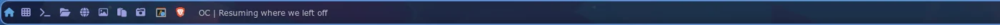
Menus
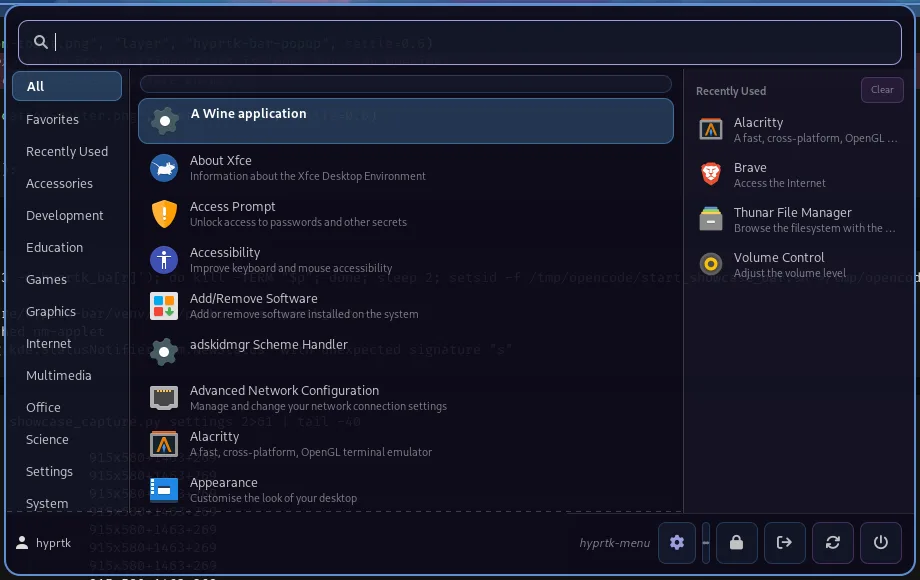
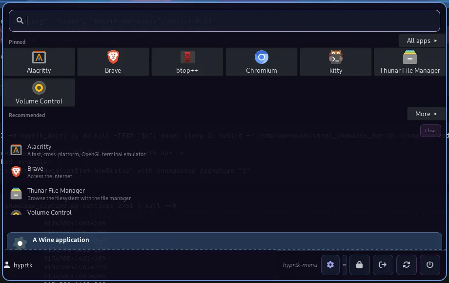
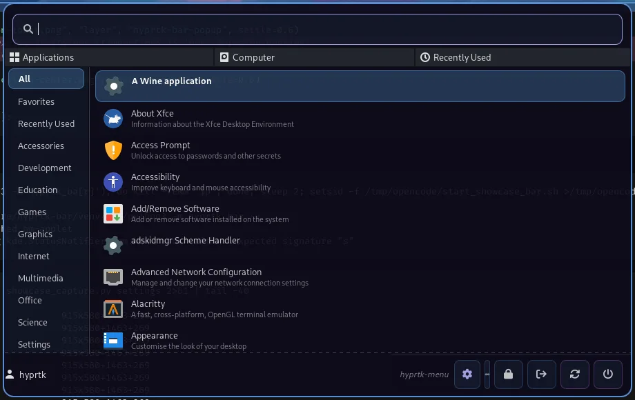
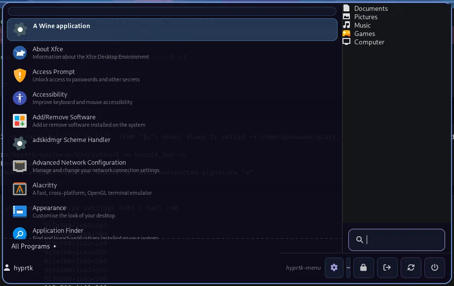
Control centre
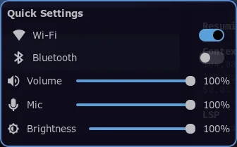
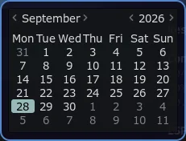
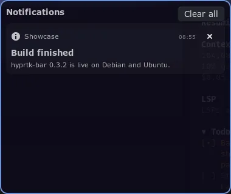
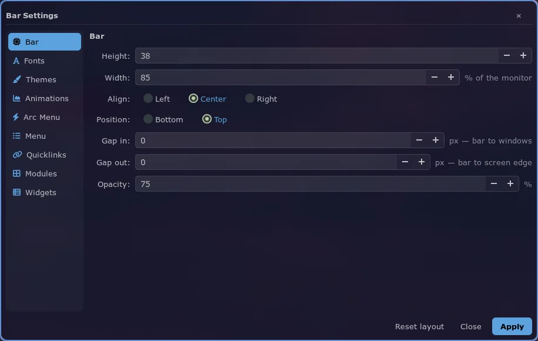
Desktop widgets
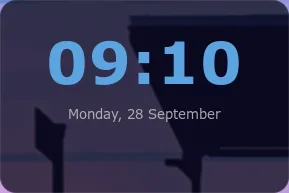
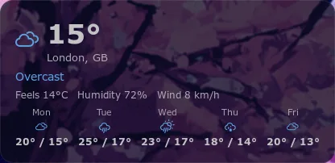
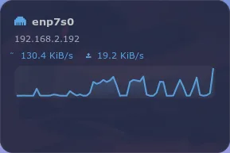
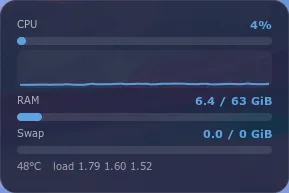
Built with
- Hyprland
- Qt 6
- Quickshell
- QML
- Python
- Lua
- pywal16
- rofi
- Arch Linux